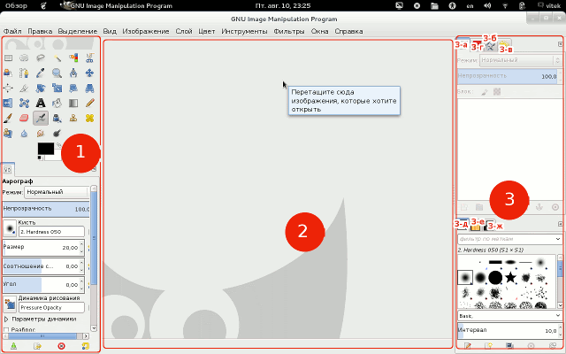
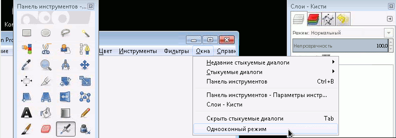
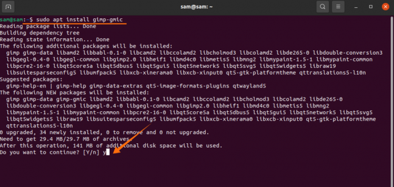

Графічний редактор GIMP
Багато хто побачить у Gimp повноцінну заміну Photoshop, до того ж повністю безкоштовну. Навіщо платити купу грошей за Photoshop, якщо є безкоштовний Gimp. Так, багато функцій повторюють конкурента, також є підтримка його оригінального формату PSD, щоправда, дещо обмежена. Найменування функцій та доступні інструменти також багато в чому збігаються. Але навіть розробники Gimp не позиціонують свій продукт як повноцінну альтернативу Photoshop. Це скоріше незалежний продукт зі схожим функціоналом та власною аудиторією. Тим не менш йому віддають перевагу любителі та невеликі організації, які не можуть собі дозволити оплачувати щомісячну передплату та купити повну ліцензію Photoshop .
- Операційна система:Microsoft Windows 7+
- Процесор:Intel Pentium III/AMD Athlon XP
- Оперативна пам'ять:512 Mb
- Вільне місце:100 MB
Cистемні вимоги
Інтерфейс
Перша це панель на якій розташовуються основні інструменти, і трохи нижче їх діалог настроювання інструментів. Коли ви вибираєте інструмент його настройки, відобразяться нижче.
Друга частина інтерфейсу GIMP це робоча область або вікно зображення, тут будуть відображатися редаговані / створювані зображення. Якщо клацнути на цій області правою кнопкою миші, то у випадаючому меню можна швидко вибрати потрібний інструмент або фільтр, або виконати інші дії.
3-я частина інтерфейсу це ще одна панель яка за замовчуванням містить діалоги для управління шарами 3-а, контурами 3-б, історією дій 3-в, каналами 3-г, кистями 3-д, текстурами 3-е та градієнтами
Для перемикання між цими видами інтерфейсів достатньо поставити або прибрати галочку одновіконний режим у пункті меню вікна (меню розташовується у верхній частині робочої області). У кожному варіанті інтерфейсу можна змінювати розміри панелей.
- Кольори та інструменти для малювання
- Градієнти
- Виділення
- Шари, канали та прозорість
- Контури
- Фільтри та ефекти
- Написання скриптів 
Можливості
Переваги та недоліки
Переваги
- Безкоштовний. І всі його обновлення також безкоштовні. Навіть його код знаходиться у вільному доступі.
- Має портативну версію, яку можна носити з собою на флешці.
- Вміє працювати з форматами .PSD
- Інсталятор Gimp важить в рази менше, тобто займає менше місця, що може бути особливо актуально для користувачів ноутбуків
Недоліки
- Файли з розширенням .gif не відображають анімацію
- У деяких випадках можливі проблеми з відображенням альфа-каналів у PNG
- Відсутня можливість створення вкладених альбомів
- Розміри зображення можна змінити, лише експортувавши його до іншої папки
- Програма не працює з багатосторінковими файлами у форматі TIFF